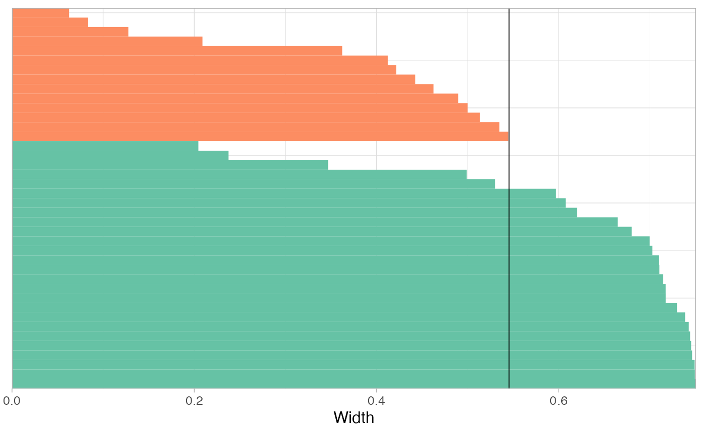

A basic implementation of kmedoids on top of cluster::pam Beware that morphospaces are calculated so far for the 1st and 2nd component.
KMEDOIDS(x, k, metric = "euclidean", ...) # S3 method for default KMEDOIDS(x, k, metric = "euclidean", ...) # S3 method for Coe KMEDOIDS(x, k, metric = "euclidean", ...) # S3 method for PCA KMEDOIDS(x, k, metric = "euclidean", retain, ...)
Arguments
| x | |
|---|---|
| k | numeric number of centers |
| metric | one of |
| ... | additional arguments to feed cluster::pam |
| retain | when passing a PCA how many PCs to retain, or a proportion of total variance, see LDA |
Value
see cluster::pam. Other components are returned (fac, etc.)
See also
Other multivariate:
CLUST(),
KMEANS(),
LDA(),
MANOVA_PW(),
MANOVA(),
MDS(),
MSHAPES(),
NMDS(),
PCA(),
classification_metrics()
Examples
data(bot) bp <- PCA(efourier(bot, 10)) #> 'norm=TRUE' is used and this may be troublesome. See ?efourier KMEANS(bp, 2)#> K-means clustering with 2 clusters of sizes 14, 26 #> #> Cluster means: #> PC1 PC2 #> 1 0.07496282 0.003229186 #> 2 -0.04036460 -0.001738792 #> #> Clustering vector: #> brahma caney chimay corona deusventrue #> 2 2 1 2 2 #> duvel franziskaner grimbergen guiness hoegardeen #> 1 2 1 2 2 #> jupiler kingfisher latrappe lindemanskriek nicechouffe #> 2 2 1 2 2 #> pecheresse sierranevada tanglefoot tauro westmalle #> 2 1 1 2 2 #> amrut ballantines bushmills chivas dalmore #> 2 1 2 1 1 #> famousgrouse glendronach glenmorangie highlandpark jackdaniels #> 2 2 2 1 2 #> jb johnniewalker magallan makersmark oban #> 2 2 2 1 2 #> oldpotrero redbreast tamdhu wildturkey yoichi #> 1 1 2 2 1 #> #> Within cluster sum of squares by cluster: #> [1] 0.03758606 0.02127484 #> (between_SS / total_SS = 67.3 %) #> #> Available components: #> #> [1] "cluster" "centers" "totss" "withinss" "tot.withinss" #> [6] "betweenss" "size" "iter" "ifault" set.seed(123) # for reproducibility on a dummy matrix matrix(rnorm(100, 10, 10)) %>% KMEDOIDS(5) #> Medoids: #> ID #> [1,] 10 5.543380 #> [2,] 30 22.538149 #> [3,] 4 10.705084 #> [4,] 7 14.609162 #> [5,] 78 -2.207177 #> Clustering vector: #> [1] 1 1 2 3 3 2 4 5 1 1 2 4 4 3 1 2 4 5 4 1 5 1 5 1 1 5 4 3 5 2 4 1 2 2 4 4 4 #> [38] 3 1 1 1 1 5 2 2 5 1 1 4 3 3 3 3 2 1 2 5 4 3 3 4 1 1 5 5 4 4 3 2 2 1 5 2 1 #> [75] 1 2 1 5 3 3 3 4 1 4 1 4 2 4 1 2 2 4 3 1 2 1 2 2 1 5 #> Objective function: #> build swap #> 2.132534 1.937061 #> #> Available components: #> [1] "medoids" "id.med" "clustering" "objective" #> [5] "isolation" "clusinfo" "silinfo" "diss" #> [9] "call" "data" "k" "ids_constant" #> [13] "ids_collinear" # On a Coe bot_f <- bot %>% efourier() #> 'norm=TRUE' is used and this may be troublesome. See ?efourier #> 'nb.h' set to 10 (99% harmonic power) bot_k <- bot_f %>% KMEDOIDS(2) #> removed these collinear columns:A1, B1, C1 # confusion matrix table(bot_k$fac$type, bot_k$clustering) #> #> 1 2 #> beer 12 8 #> whisky 14 6 # on a PCA bot_k2 <- bot_f %>% PCA() %>% KMEDOIDS(12, retain=0.9) # confusion matrix with(bot_k, table(fac$type, clustering)) #> clustering #> 1 2 #> beer 12 8 #> whisky 14 6 # silhouette plot bot_k %>% plot_silhouette()  # average width as a function of k k_range <- 2:12 widths <- sapply(k_range, function(k) KMEDOIDS(bot_f, k=k)$silinfo$avg.width) #> removed these collinear columns:A1, B1, C1 #> removed these collinear columns:A1, B1, C1 #> removed these collinear columns:A1, B1, C1 #> removed these collinear columns:A1, B1, C1 #> removed these collinear columns:A1, B1, C1 #> removed these collinear columns:A1, B1, C1 #> removed these collinear columns:A1, B1, C1 #> removed these collinear columns:A1, B1, C1 #> removed these collinear columns:A1, B1, C1 #> removed these collinear columns:A1, B1, C1 #> removed these collinear columns:A1, B1, C1 plot(k_range, widths, type="b")